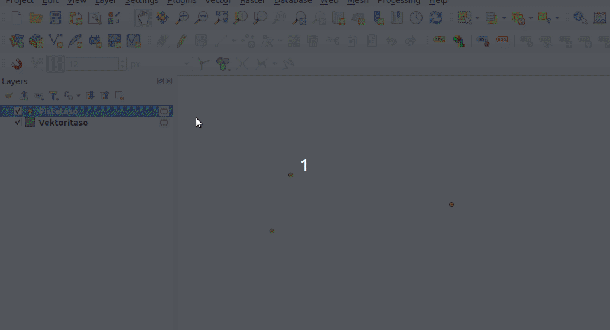

Harjoitus 8: Prosessointialgoritmi
Taustaa
Harjoituksen tarkoituksena on tutustua prosessointialgoritmin kirjoittamiseen.
QGISiin voi kirjoittaa itsenäisiä prosessointialgoritmeja,
siten että ne kirjoitetaan omaan .py-tiedostoon ja lisätään
prosessointipaneeliin. Algoritmin voi sisällyttää myös lisäosaan,
mistä on muutama hyöty. Tällöin algoritmeille määritetään
oma ns. provider ja algoritmit voi selkeämmin kategorisoida.
Lisäosaan voi myös sisällyttää useampia algoritmeja, jolloin
on helpompaa jakaa käyttäjille lisäosa, joka sisältää useamman
algoritmin, kuin jakaa joukko yksittäisiä skriptitiedostoja.
Provider näkyy käyttöliittymässä siten, että se on prosessointityökaluvalikossa
ylimmän tason kategoria:

Provider > ryhmä > algoritmi
Algoritmeissä käyttöliittymän luominen tapahtuu eri tavalla. Prosessointityökalujen käyttöön on ennalta määritetty joukko widgettejä, jotka määritetään algoritmiluokkaan ohjelmallisesti. Käyttöliittymää ei voi siis algoritmien tapauksessa luoda itse Qt Designerilla.
Varsinaisen prosessointiskriptin kirjoittaminen toimii samalla tavalla riippumatta onko se itsenäinen vai lisäosaan liitetty.
Tarkastellaan minimiesimerkkiä prosessointiskriptistä (pohjautuu QGISin mukana tulevaan skriptimalliin). Tässä algoritmissa lähtötasoksi annetaan vektoritaso, ja tulostasona se tuottaa kopion lähtötasosta.
"""
***************************************************************************
* *
* This program is free software; you can redistribute it and/or modify *
* it under the terms of the GNU General Public License as published by *
* the Free Software Foundation; either version 2 of the License, or *
* (at your option) any later version. *
* *
***************************************************************************
"""
from qgis.PyQt.QtCore import QCoreApplication
from qgis.core import (QgsProcessing,
QgsFeatureSink,
QgsProcessingException,
QgsProcessingAlgorithm,
QgsProcessingParameterFeatureSource,
QgsProcessingParameterFeatureSink)
from qgis import processing
# Luodaan luokka, joka perii
# QgsProcessingAlgorithmin.
# Luokan tulee määrittää tietyn
# nimiset funktiot, joita QGIS
# kutsuu sisäisesti
class SampleAlgorithm(QgsProcessingAlgorithm):
# Tässä määritetään ns. vakiomuuttujat (constant),
# joilla viitataan algoritmin parametreihin.
# Näitä käytetään luokassa sisäisesti, mutta
# niitä tarvitaan myös jos algoritmi
# kutsutaan ulkoisesti Pythonilla esimerkiksi
# konsolissa tai lisäosassa.
INPUT = 'INPUT'
OUTPUT = 'OUTPUT'
# Voidaan määrittää kieliversiointia
# varten funktio käännettäviä
# merkkijonoja varten.
# Koska tässä esimerkissä on kyseessä
# itsenäinen skripti, ei voida käyttää
# QGIS Plugin Toolsista tuotua
# funktiota
def tr(self, string):
return QCoreApplication.translate('Processing', string)
# Palauttaa olion tästä luokasta.
def createInstance(self):
return SampleAlgorithm()
# Palauttaa algoritmin nimen sisäiseen käyttöön.
# Tämä ei näy käyttöliittymässä,
# ja sen tulee olla algoritmille uniikki.
# Sitä ei myöskään saa lokalisoida, eli
# ei käytetä tr()-metodia
def name(self):
return 'myscript'
# Palauttaa käyttöliittymässä näkyvän skriptin nimen
def displayName(self):
return self.tr('Sample Script')
# Palauttaa ryhmän nimen, johon skripti kuuluu
def group(self):
return self.tr('Sample Scripts')
# Palauttaa ryhmän sisäisessä käytössä olevan
# tunnisteen.
def groupId(self):
return 'sample'
# Palauttaa tekstin, joka näkyy algoritmin
# käyttöliittymän oikeassa reunassa
def shortHelpString(self):
return self.tr("This sample algorithm reproduces a vector layer as is.")
# Tässä alustetaan algoritmi ja määritellään
# sen lähtöparametreja, mutta myös
# tulostasoa. Nämä parametrit näkyvät myös
# algoritmin käyttöliittymässä.
def initAlgorithm(self, config=None):
self.addParameter(
QgsProcessingParameterFeatureSource(
self.INPUT, # tässä viitataan aikaisemmin määriteltyy vakiomuuttujaan
self.tr('Input layer'),
[QgsProcessing.SourceType.TypeVectorAnyGeometry]
)
)
self.addParameter(
QgsProcessingParameterFeatureSink(
self.OUTPUT,
self.tr('Output layer')
)
)
# Funktio, jossa suoritetaan algoritmin
# varsinainen toiminta.
def processAlgorithm(self, parameters, context, feedback):
# Haetaan lähtötaso. Huomaa, että
# prosessointialgoritmeissa tasoja ym.
# parametreja käsitellään eri tavalla
# kuin aikaisemmin.
# Tässä funktio ei palauta esim.
# QgsMapLayer-oliota, vaan
# QgsProcessingFeatureSourcen
source = self.parameterAsSource(
parameters,
self.INPUT,
context
)
if source is None:
raise QgsProcessingException(self.invalidSourceError(parameters, self.INPUT))
# Tässä palautetaan QgsFeatureSink,
# johon voidaan lisätä vektoritason
# kohteita. Tulostaso luodaan
# automaattisesti tämän pohjalta.
(sink, dest_id) = self.parameterAsSink(
parameters,
self.OUTPUT,
context,
source.fields(),
source.wkbType(),
source.sourceCrs()
)
# Feedback on QgsProcessingFeedback-luokan
# olio, joka syötetään algoritmille kun
# se käynnistetään. Sillä voidaan lähettää
# info-, varoitus- tai virheviestejä
# käyttäjälle. Viestit näkyvät algoritmi-
# käyttöliittymän lokissa.
feedback.pushInfo(f'CRS is {source.sourceCrs().authid()}')
if sink is None:
raise QgsProcessingException(self.invalidSinkError(parameters, self.OUTPUT))
# Lasketaan kerroin, jolla voidaan päivittää
# edistymispalkkia
total = 100.0 / source.featureCount() if source.featureCount() else 0
features = source.getFeatures()
for current, feature in enumerate(features):
# Jos käyttäjä peruu algoritmin, lopetetaan
# prosessointi.
if feedback.isCanceled():
break
# Lisätään QgsFeatureSink-olioon
# kohde sellaisenaan
sink.addFeature(feature, QgsFeatureSink.Flag.FastInsert)
# Päivitetään edistymispalkki
feedback.setProgress(int(current * total))
return {self.OUTPUT: dest_id}Prosessointialgoritmin kutsuminen
Jos halutaan kutsua prosesointialgoritmia Pythonilla
konsolista, skriptistä, lisäosasta tai toisesta
prosessointialgoritmista, se voidaan tehdä seuraavasti.
qgis.processing tulee olla importoitu. Huomaa, että algoritmin
parametrit annetaan sanakirjana (dictionary), ja avaimina
käytetään algoritmissa määriteltyjä vakiomuuttujien arvoja.
# from qgis import processing
input_layer_id = iface.activeLayer().id()
parameters = {
'INPUT': input_layer_id,
'DISTANCE': 1.5,
'SEGMENTS': 5,
'END_CAP_STYLE': 0,
'JOIN_STYLE': 0,
'MITER_LIMIT': 2,
'DISSOLVE': False,
'OUTPUT': 'memory:'
}
output = processing.run('native:buffer', parameters)
# Huomioi, että `processing.run()` metodi
# palauttaa tässä sanakirjan.
# Tulostaso voidaan hakea avaimella 'OUTPUT'
buffered_layer = output.get('OUTPUT')
QgsProject.instance().addMapLayer(buffered_layer)Algoritmi lisäosassa
Varsinainen algoritmiluokan rakenne on lisäosaan sisällytetyssä algoritmissa samanlainen. Lisäosaan täytyy vain määrittää ns. provider, jonka avulla algoritmit lisätään prosessointityökaluihin.
Kun loimme lisäosalle pohjan harjoituksessa 5, valitsimme vaihtoehdoksi sen, että lisäosaan lisätään myös prosessointialgoritmi. Tällöin meillä on jo valmis pohja lähteä kirjoittamaan omaa algoritmia.
Käydään kuitenkin läpi, miten algoritmi varsinaisesti päätyy QGISin käyttöliittymään.
test-plugin/testplugin-kansiossa pitäisi olla kansio
nimeltä testplugin_processing. Se sisältää Python-tiedostot
provider.py ja processing_algorithm.py.
processing_algorithm.py:
from __future__ import annotations
from typing import Any
from qgis import processing # noqa: TCH002
from qgis.core import (
QgsFeatureSink,
QgsProcessing,
QgsProcessingAlgorithm,
QgsProcessingContext,
QgsProcessingFeedback,
QgsProcessingParameterFeatureSink,
QgsProcessingParameterFeatureSource,
)
from qgis.PyQt.QtCore import QCoreApplication
class ProcessingAlgorithm(QgsProcessingAlgorithm):
"""
This is an example algorithm that takes a vector layer and
creates a new identical one.
It is meant to be used as an example of how to create your own
algorithms and explain methods and variables used to do it. An
algorithm like this will be available in all elements, and there
is not need for additional work.
All Processing algorithms should extend the QgsProcessingAlgorithm
class.
"""
# Constants used to refer to parameters and outputs. They will be
# used when calling the algorithm from another algorithm, or when
# calling from the QGIS console.
INPUT = "INPUT"
OUTPUT = "OUTPUT"
def __init__(self) -> None:
super().__init__()
self._name = "myprocessingalgorithm"
self._display_name = "My Processing Algorithm"
self._group_id = ""
self._group = ""
self._short_help_string = ""
def tr(self, string) -> str:
"""
Returns a translatable string with the self.tr() function.
"""
return QCoreApplication.translate("Processing", string)
def createInstance(self): # noqa N802
return ProcessingAlgorithm()
def name(self) -> str:
"""
Returns the algorithm name, used for identifying the algorithm. This
string should be fixed for the algorithm, and must not be localised.
The name should be unique within each provider. Names should contain
lowercase alphanumeric characters only and no spaces or other
formatting characters.
"""
return self._name
def displayName(self) -> str: # noqa N802
"""
Returns the translated algorithm name, which should be used for any
user-visible display of the algorithm name.
"""
return self.tr(self._display_name)
def groupId(self) -> str: # noqa N802
"""
Returns the unique ID of the group this algorithm belongs to. This
string should be fixed for the algorithm, and must not be localised.
The group id should be unique within each provider. Group id should
contain lowercase alphanumeric characters only and no spaces or other
formatting characters.
"""
return self._group_id
def group(self) -> str:
"""
Returns the name of the group this algorithm belongs to. This string
should be localised.
"""
return self.tr(self._group)
def shortHelpString(self) -> str: # noqa N802
"""
Returns a localised short helper string for the algorithm. This string
should provide a basic description about what the algorithm does and the
parameters and outputs associated with it..
"""
return self.tr(self._short_help_string)
def initAlgorithm(self, config=None): # noqa N802
"""
Here we define the inputs and output of the algorithm, along
with some other properties.
"""
# We add the input vector features source. It can have any kind of
# geometry.
self.addParameter(
QgsProcessingParameterFeatureSource(
self.INPUT,
self.tr("Input layer"),
[QgsProcessing.TypeVectorAnyGeometry],
)
)
# We add a feature sink in which to store our processed features (this
# usually takes the form of a newly created vector layer when the
# algorithm is run in QGIS).
self.addParameter(QgsProcessingParameterFeatureSink(self.OUTPUT, self.tr("Output layer")))
def processAlgorithm( # noqa N802
self,
parameters: dict[str, Any],
context: QgsProcessingContext,
feedback: QgsProcessingFeedback,
) -> dict:
"""
Here is where the processing itself takes place.
"""
# Initialize feedback if it is None
if feedback is None:
feedback = QgsProcessingFeedback()
# Retrieve the feature source and sink. The 'dest_id' variable is used
# to uniquely identify the feature sink, and must be included in the
# dictionary returned by the processAlgorithm function.
source = self.parameterAsSource(parameters, self.INPUT, context)
(sink, dest_id) = self.parameterAsSink(
parameters,
self.OUTPUT,
context,
source.fields(),
source.wkbType(),
source.sourceCrs(),
)
# Send some information to the user
feedback.pushInfo(f"CRS is {source.sourceCrs().authid()}")
# Compute the number of steps to display within the progress bar and
# get features from source
total = 100.0 / source.featureCount() if source.featureCount() else 0
features = source.getFeatures()
for current, feature in enumerate(features):
# Stop the algorithm if cancel button has been clicked
if feedback.isCanceled():
break
# Add a feature in the sink
sink.addFeature(feature, QgsFeatureSink.FastInsert)
# Update the progress bar
feedback.setProgress(int(current * total))
# To run another Processing algorithm as part of this algorithm, you can use
# processing.run(...). Make sure you pass the current context and feedback
# to processing.run to ensure that all temporary layer outputs are available
# to the executed algorithm, and that the executed algorithm can send feedback
# reports to the user (and correctly handle cancellation and progress reports!)
if False:
_buffered_layer = processing.run(
"native:buffer",
{
"INPUT": dest_id,
"DISTANCE": 1.5,
"SEGMENTS": 5,
"END_CAP_STYLE": 0,
"JOIN_STYLE": 0,
"MITER_LIMIT": 2,
"DISSOLVE": False,
"OUTPUT": "memory:",
},
context=context,
feedback=feedback,
)["OUTPUT"]
# Return the results of the algorithm. In this case our only result is
# the feature sink which contains the processed features, but some
# algorithms may return multiple feature sinks, calculated numeric
# statistics, etc. These should all be included in the returned
# dictionary, with keys matching the feature corresponding parameter
# or output names.
return {self.OUTPUT: dest_id}Tästä löytyy pitkälti sama rakenne kuin aikaisemmassa esimerkissä.
provider.py:
from qgis.core import QgsProcessingProvider
from testplugin.testplugin_processing.processing_algorithm import ProcessingAlgorithm
class Provider(QgsProcessingProvider):
def __init__(self) -> None:
super().__init__()
self._id = "myprovider"
self._name = "My provider"
def id(self) -> str:
"""The ID of your plugin, used to identify the provider.
This string should be a unique, short, character only string,
eg "qgis" or "gdal". This string should not be localised.
"""
return self._id
def name(self) -> str:
"""
The display name of your plugin in Processing.
This string should be as short as possible and localised.
"""
return self._name
def load(self) -> bool:
self.refreshAlgorithms()
return True
def icon(self):
"""
Returns a QIcon which is used for your provider inside the Processing toolbox.
"""
return QgsProcessingProvider.icon(self)
def loadAlgorithms(self) -> None: # noqa N802
"""
Adds individual processing algorithms to the provider.
"""
alg = ProcessingAlgorithm()
self.addAlgorithm(alg)Tässä määritellään Providerin ominaisuudet, mm. nimi, ikoni ja tunniste.
Ehkä tärkein funktio on kuitenkin loadAlgorithms().
Siinä lisätään varsinainen algoritmi provideriin. Algoritmi pitää
ensin importoida, mikä on tehty tiedoston alussa. Jos provideriin
kuuluu useampi algoritmi, ne kaikki tulee importoida ja lisätä
loadAlgorithms()-funktioon.
Itse provider lisätään QGISiin test-plugin/testplugin/plugin.py-tiedostossa.
plugin.py (relevantit osiot):
# importoidaan Provider-luokka
from testplugin.testplugin_processing.provider import Provider
# ... #
# Alustetaan prosessointi
def initProcessing(self): # noqa N802
self.provider = Provider()
QgsApplication.processingRegistry().addProvider(self.provider)
# initProcessing() kutsutaan täällä
def initGui(self) -> None: # noqa N802
# ... #
self.initProcessing()
# ... #
# Jos lisäosa inaktivoidaan, poistetaan
# Provider rekisteristä
def unload(self) -> None:
"""Removes the plugin menu item and icon from QGIS GUI."""
for action in self.actions:
iface.removePluginMenu(Plugin.name, action)
iface.removeToolBarIcon(action)
teardown_logger(Plugin.name)
QgsApplication.processingRegistry().removeProvider(self.provider)Halutessaan lisäosaan voi myös lisätä useamman Provider-luokan.
Harjoitus 8.1: Algoritmin kirjoitus
Muokkaa test-plugin/testplugin/testplugin_processing/processing_algorithm.py-tiedostoon
algoritmi, joka toimii seuraavasti:
Parametrit:
- Lähtötaso (QgsProcessingParameterFeatureSource): vain pistevektoritasot hyväksytään.
- Pisteparametri (QgsProcessingParameterPoint)
- Tulostaso (QgsProcessingParameterFeatureSink)
Prosessointi:
- Algoritmi laskee jokaisen lähtötason pistekohteelle etäisyyden käyttäjän valitsemasta pisteestä.
- Jos valitun pisteen koordinaattijärjestelmä poikkeaa lähtötason koordinaattijärjestelmästä, se muunnetaan oikeaan koordinaattijärjestelmään
- Tulostasolle lisätään kenttä “distance”, johon lasketaan kohteen etäisyys
valitusta pisteestä
- Muut lähtötason kentät ja kohteiden arvot säilytetään ennallaan!
- Päivitä edistymispalkkia ja lähetä tarvittaessa viestejä, esim. jos koordinaattijärjestelmää muunnetaan

from __future__ import annotations
from typing import Any
from qgis.core import (
QgsCoordinateTransform,
QgsFeature,
QgsFeatureSink,
QgsField,
QgsGeometry,
QgsProcessing,
QgsProcessingAlgorithm,
QgsProcessingContext,
QgsProcessingFeedback,
QgsProcessingParameterFeatureSink,
QgsProcessingParameterFeatureSource,
QgsProcessingParameterPoint,
QgsProject,
)
from qgis.PyQt.QtCore import QCoreApplication, QVariant
class ProcessingAlgorithm(QgsProcessingAlgorithm):
"""
Sample Plugin Algorithm.
Calculates the shortest distance to a given point
for each feature in a point layer.
"""
INPUT_LAYER = "INPUT_LAYER"
POINT_INPUT = "POINT_INPUT"
OUTPUT = "OUTPUT"
def __init__(self) -> None:
super().__init__()
self._name = "samplepluginalgorithm"
self._display_name = "Sample Plugin Algorithm"
self._group_id = "group"
self._group = "Group 1"
self._short_help_string = "This is a sample algorithm."
def tr(self, string) -> str:
"""
Returns a translatable string with the self.tr() function.
"""
return QCoreApplication.translate("Processing", string)
def createInstance(self): # noqa N802
return ProcessingAlgorithm()
def name(self) -> str:
"""
Returns the algorithm name, used for identifying the algorithm. This
string should be fixed for the algorithm, and must not be localised.
The name should be unique within each provider. Names should contain
lowercase alphanumeric characters only and no spaces or other
formatting characters.
"""
return self._name
def displayName(self) -> str: # noqa N802
"""
Returns the translated algorithm name, which should be used for any
user-visible display of the algorithm name.
"""
return self.tr(self._display_name)
def groupId(self) -> str: # noqa N802
"""
Returns the unique ID of the group this algorithm belongs to. This
string should be fixed for the algorithm, and must not be localised.
The group id should be unique within each provider. Group id should
contain lowercase alphanumeric characters only and no spaces or other
formatting characters.
"""
return self._group_id
def group(self) -> str:
"""
Returns the name of the group this algorithm belongs to. This string
should be localised.
"""
return self.tr(self._group)
def shortHelpString(self) -> str: # noqa N802
"""
Returns a localised short helper string for the algorithm. This string
should provide a basic description about what the algorithm does and the
parameters and outputs associated with it..
"""
return self.tr(self._short_help_string)
def initAlgorithm(self, config=None): # noqa N802
"""
Here we define the inputs and output of the algorithm, along
with some other properties.
"""
self.addParameter(
QgsProcessingParameterFeatureSource(
self.INPUT_LAYER,
self.tr("Input layer"),
[QgsProcessing.TypeVectorPoint],
)
)
self.addParameter(
QgsProcessingParameterPoint(
self.POINT_INPUT,
self.tr("Point"),
)
)
self.addParameter(
QgsProcessingParameterFeatureSink(
self.OUTPUT,
self.tr("Output layer"),
)
)
def processAlgorithm( # noqa N802
self,
parameters: dict[str, Any],
context: QgsProcessingContext,
feedback: QgsProcessingFeedback,
) -> dict:
"""
Here is where the processing itself takes place.
"""
if feedback is None:
feedback = QgsProcessingFeedback()
source = self.parameterAsSource(parameters, self.INPUT_LAYER, context)
point = self.parameterAsPoint(parameters, self.POINT_INPUT, context)
point_crs = self.parameterAsPointCrs(parameters, self.POINT_INPUT, context)
source_crs = source.sourceCrs()
point_geom = QgsGeometry.fromPointXY(point)
feedback.pushInfo(f"Calculating distance to point at {point.x()}, {point.y()}.")
if point_crs != source_crs:
feedback.pushWarning(
f"Coordinate systems do not match!\
Transforming point from {point_crs.authid()} to {source_crs.authid()}."
)
transform = QgsCoordinateTransform(point_crs, source_crs, QgsProject.instance())
point_geom.transform(transform)
output_layer_fields = source.fields()
distance_field = QgsField("distance", QVariant.Double)
output_layer_fields.append(distance_field)
(sink, dest_id) = self.parameterAsSink(
parameters,
self.OUTPUT,
context,
output_layer_fields,
source.wkbType(),
source_crs,
)
total = 100.0 / source.featureCount() if source.featureCount() else 0
features = source.getFeatures()
for current, feature in enumerate(features):
if feedback.isCanceled():
break
new_feature = feature
feature.setFields(output_layer_fields, False)
new_feature.resizeAttributes(new_feature.fields().size())
feature_geom = feature.geometry()
distance = feature_geom.distance(point_geom)
new_feature.setGeometry(feature_geom)
new_feature.setAttribute("distance", round(distance, 2))
sink.addFeature(new_feature, QgsFeatureSink.FastInsert)
feedback.setProgress(int(current * total))
return {self.OUTPUT: dest_id}Harjoitus 8.2: Testit algoritmille
Luo tiedosto test-plugin/tests/test_processing_algorithm.
Kirjoita testi, joka testaa ainakin sen että tulostason pisteelle
laskettiin oikea etäisyys. Voit käyttää tätä pohjaa:
from qgis import processing
from qgis.core import QgsWkbTypes
from sampleplugin.sampleplugin_processing.provider import Provider
def test_sample_algorithm(qgis_app, qgis_processing, point_layer): # noqa: ARG001
provider = Provider()
qgis_app.processingRegistry().addProvider(provider)
# Kutsu algoritmia
result = processing.run(
"myprovider:myprocessingalgorithm",
{
<parametrit>
},
)
output_layer = result["OUTPUT"]
# Hae tulostasolta kohde ja
# tarkista tuloksetfrom qgis import processing
from qgis.core import QgsWkbTypes
from sampleplugin.sampleplugin_processing.provider import Provider
def test_sample_algorithm(qgis_app, qgis_processing, point_layer): # noqa: ARG001
provider = Provider()
qgis_app.processingRegistry().addProvider(provider)
result = processing.run(
"myprovider:myprocessingalgorithm",
{
"INPUT_LAYER": point_layer,
"POINT_INPUT": "1, 0 [EPSG:4326]",
"OUTPUT": "TEMPORARY_OUTPUT",
},
)
output_layer = result["OUTPUT"]
point_feature = output_layer.getFeature(1)
point_feature_distance = point_feature.attribute("distance")
expected_distance = 1.0
assert output_layer.featureCount() == 1
assert output_layer.crs().authid() == "EPSG:4326"
assert output_layer.wkbType() == QgsWkbTypes.Point
assert point_feature_distance == expected_distance